The complete design language for the newbie mobile app — colour, type, components, motion and the full navigation map. A single source of truth for engineering handoff.
newbie helps people new to a city or a sport find low-pressure activities and the people who host them. The visual language is calm, editorial and outdoorsy — warm greens, generous whitespace, hairline structure and a serif accent for moments of personality.
Design principles
Quiet by default. Content leads; chrome recedes. Hairlines over heavy borders, tone over shadow.
One accent. Forest green carries every primary action. We never compete it with a second brand colour.
Human scale. Large type, soft radii, roomy touch targets (≥ 44 pt).
Canvas
Artboard
390 × 844 pt
Safe top
59 pt
Tab bar
~84 pt
Screen gutter
20–24 pt
Stack
React 18 + a thin custom router (history stack). Styling via CSS custom properties — no framework.
Theme & language are global providers; both persist to localStorage.
02
Colour system
Every colour is a CSS variable defined in oklch() for perceptual consistency. Components never hard-code colour — they read tokens, so the dark theme is a pure variable swap. Two families: a green ramp for brand & accent, and a warm-grey neutral ramp for surfaces & text.
Brand & accent — greens
--forest
Forest
Primary actions, active states
oklch(0.32 0.06 150)
--pine
Pine
Hover / pressed accent
oklch(0.42 0.07 148)
--sage
Sage
Secondary icon tint
oklch(0.62 0.08 148)
--moss
Moss
Decorative / illustration
oklch(0.78 0.07 145)
--mint
Mint
Chips, secondary buttons, fills
oklch(0.94 0.028 155)
--mint-2
Mint 2
Tap hover, tint surfaces
oklch(0.97 0.018 155)
--lime
Lime
Notification dots, “new” badges
oklch(0.86 0.14 132)
--warn / --rose
Warn · Rose
Alerts, destructive, prices
0.78 0.13 70 · 0.72 0.11 25
Neutrals — surfaces & text
Token
Role
Light
Dark
--paper
Primary surface / cards
0.987 0.004 150
0.205 0.008 158
--paper-2
Inputs, recessed fills
0.97 0.005 150
0.255 0.009 158
--ink
Primary text
0.20 0.015 150
0.96 0.006 150
--ink-2
Secondary text
0.42 0.012 150
0.76 0.008 150
--ink-3
Tertiary / captions, inactive nav
0.62 0.010 150
0.58 0.009 150
--hair
Hairline dividers (0.5px)
0.90 0.008 150
0.31 0.008 150
--hair-2
Stronger borders, input edge
0.85 0.010 150
0.40 0.010 150
◆
Dark theme rule. The dark palette is applied by setting [data-theme="dark"] on the root, which redefines the same token names. Greens get lighter (forest → 0.80 L) so they remain legible against dark surfaces; neutrals invert. Because components only reference tokens, no component code changes between themes.
03
Typography
Two families. Manrope carries the entire interface — its low contrast and open counters stay crisp at small sizes. Fraunces appears sparingly as a display serif for brand and emotional beats. Headings run light (200–300) with tight tracking; UI text sits at 400–500.
Body copy is set at fifteen pixels with a 1.5 line height for comfortable reading inside cards and sheets.
body · Manrope 400 15 px / 1.5
CAPTION · 12·05 · 1.2KM · €8
caption / mono SF Mono · 11–12 px · metadata, prices, time
04
Spacing, radius & elevation
Spacing follows a soft 4-pt rhythm; the common steps are 4 / 8 / 12 / 16 / 20 / 24. Radii are generous and consistent by component class. Elevation is expressed mostly through tone and hairlines rather than shadow — shadow is reserved for floating surfaces (sheets, FAB, the phone frame).
Corner radius
7px · pills/tags
14px · inputs
20px · cards
999px · buttons
Elevation
0 · hairline
1 · card
2 · sheet / FAB
Dividers are 0.5px hairlines in --hair. Avoid 1px grey borders inside content.
05
Components
The core kit. Each maps to a class or React component in the codebase. Specs below show the live element; metrics in mono are the implementation values.
Buttons
Primary — forest · paper text · 16/28 pad · hover→pine · :active scale .97
Secondary — mint · forest text · 14/22 · Ghost — transparent · ink-2 · 12/18
Chips
PadelThis weekAny level ▾< 5km
Filled (mint/forest) for sport & active filters · Outline (hairline) for inactive
Active-state caveat (fixed). Do not put a CSS transition on the nav item's color when the colour is a var() token — the transition fails to start on class change and the highlight sticks to the previous tab. Swap colour instantly; animate opacity/transform only.
06
Iconography
A single line-icon family: 24×24 grid, 1.5px stroke, round caps and joins, no fill. Icons inherit currentColor so they pick up the surrounding text token. Active/emphasis states bump the stroke to 2px rather than changing colour weight. Sport glyphs are custom-drawn in the same style.
home · compass · search · filter · pin · sun · moon · sport (padel) · plus — all 1.5px, currentColor
07
Navigation & click map
The app uses a single history-stack router. Every push records the destination; the back affordance (‹ or sheet dismiss) pops one entry, so back always returns to wherever you actually came from — not a fixed parent. Tab switches and flow completions reset the stack to a clean root. Each route below is a route.name in app.jsx.
list · set default · remove · add card (inline form)
messages
chat
notifications
event_detail · friend · challenge_detail
create_event / edit_event
Publish / Save → back or home
◆
Sheets vs. routes. Modal sheets (Location, Add activity, Filter, Join) are local state on the current screen and slide up from the bottom — they don't push a route and dismiss on backdrop tap. The Join sheet surfaces the verified-host trust row and the payment-method picker (saved cards come from a shared store; “Add a card” expands an inline form). Everything else is a routed screen that pushes onto the history stack.
08
Screen reference
Real captures from the running prototype (light theme, English), grouped by flow. Each is labelled with its route.name so it maps directly onto the click map above. All screens also exist in dark theme and Spanish.
Onboarding & auth entry flow
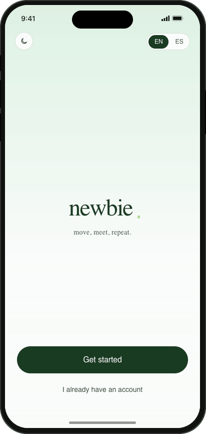
Splash
splash
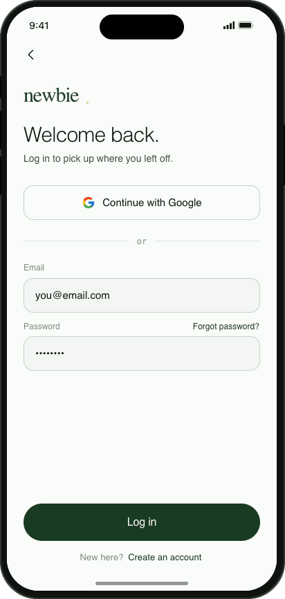
Log in
login
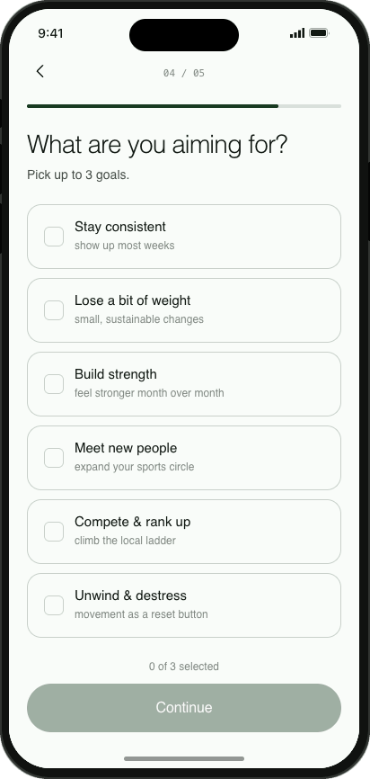
Onboarding quiz
onb_q1 … q5 · 5 steps
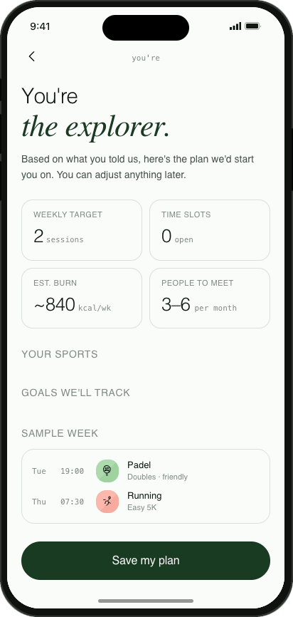
Match results
onb_results
Main tabs bottom navigation
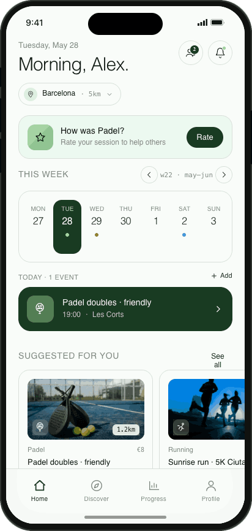
Home
main · home
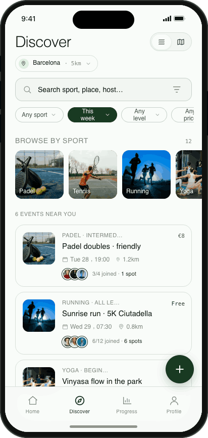
Discover
main · discover
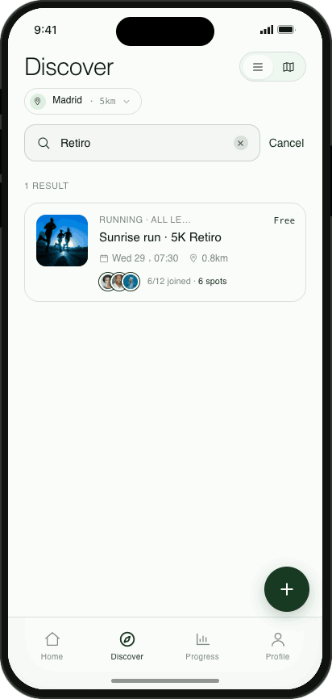
Search results
discover · SearchPanel
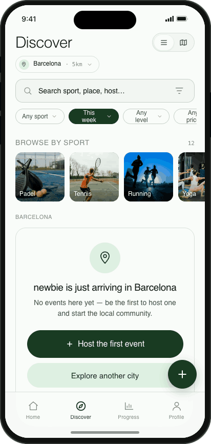
Cold-start city
discover · ColdCityState
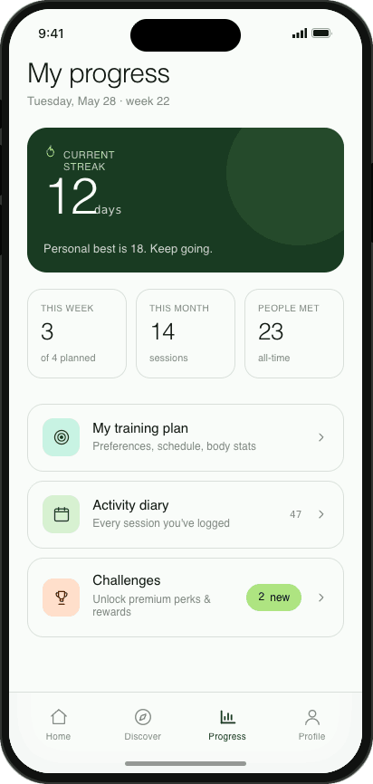
Progress
main · progress
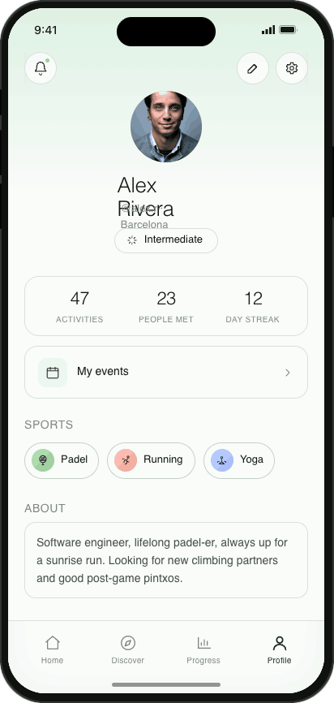
Profile
main · profile
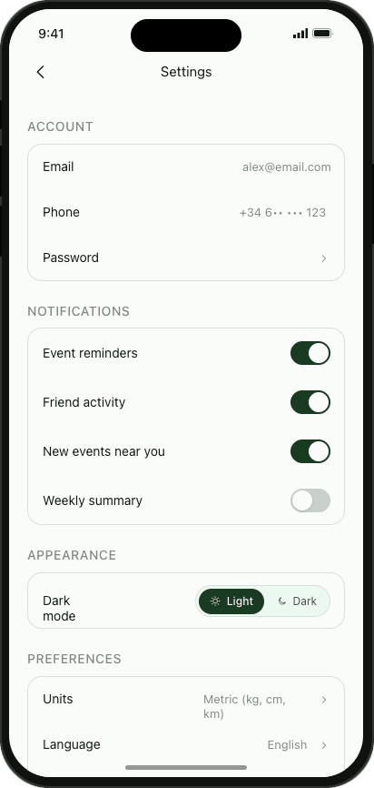
Settings · Appearance
settings
Events & activity core loops
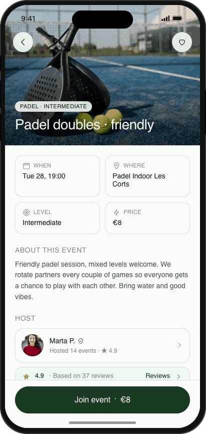
Event detail
event_detail
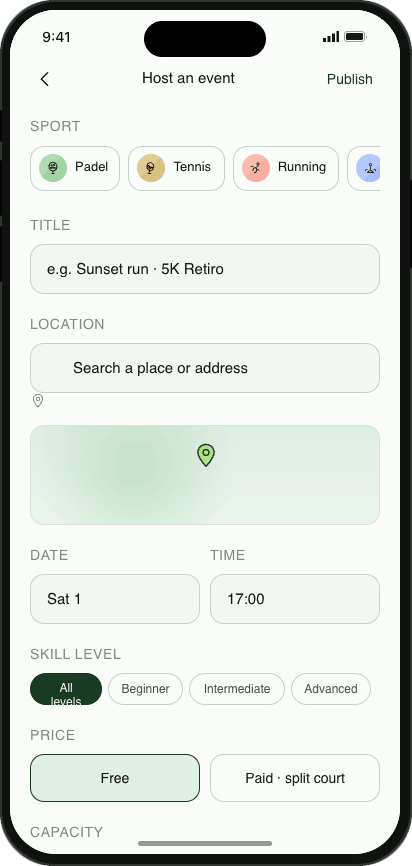
Host / edit event
create_event · edit_event
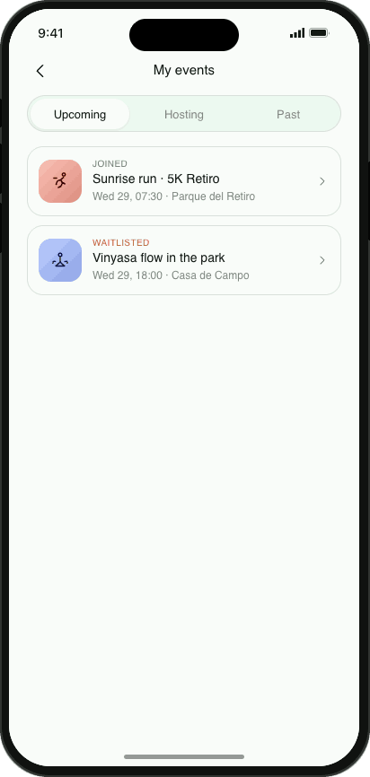
My events
my_events
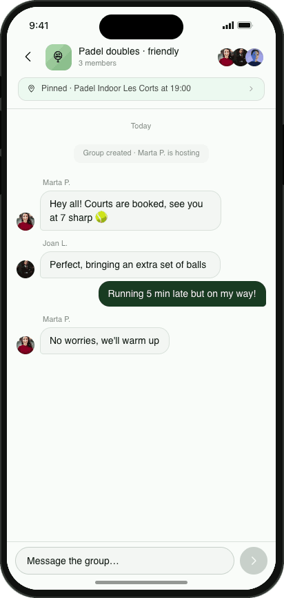
Event group chat
event_chat
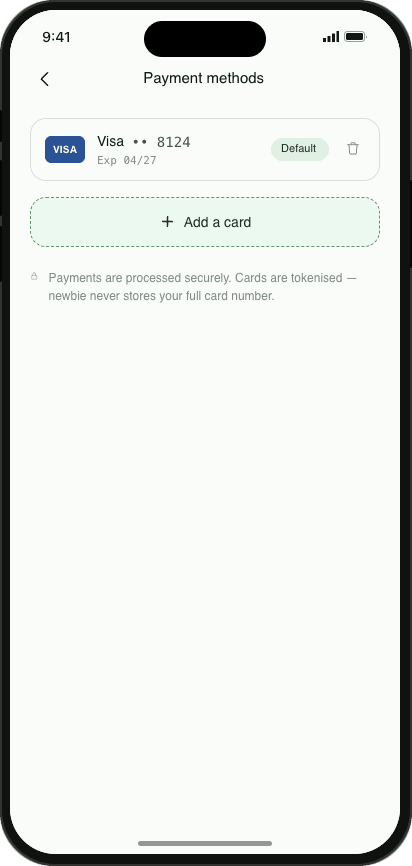
Payment methods
payment_methods
Social & system people, messaging, alerts
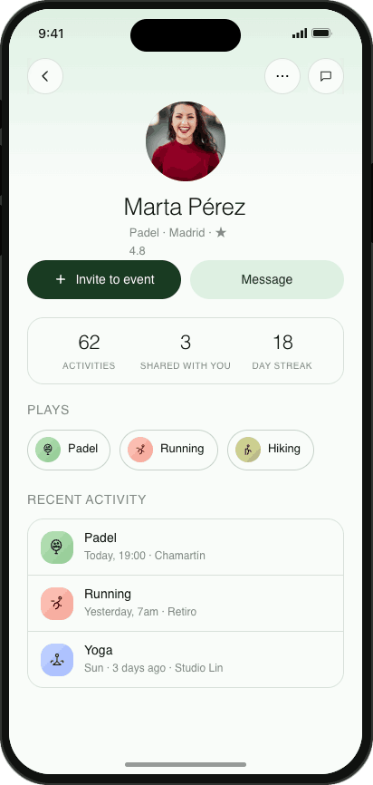
Friend profile
friend
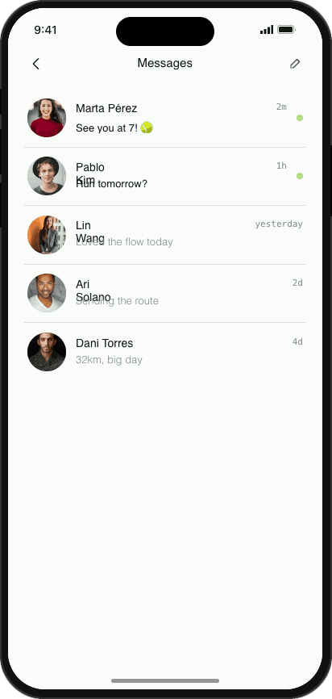
Messages
messages
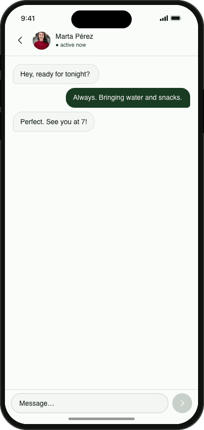
Direct chat
chat
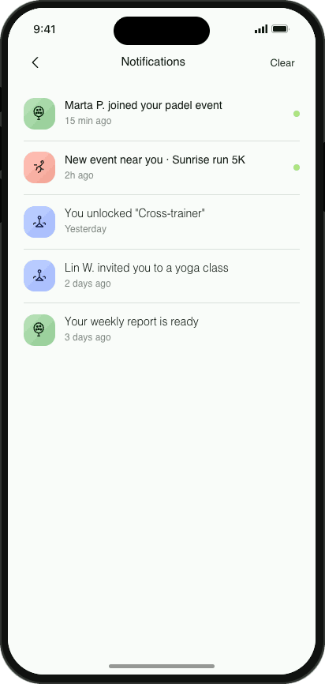
Notifications
notifications
09
Motion & interaction
Motion is subtle and functional — it confirms a tap or reveals a surface, never decorates. Durations are short (150–400ms) with an ease-out feel. No infinite or looping animation on content.
Pattern
Spec
Where
Tap feedback
transform: scale(0.97–0.98) · 150ms
Buttons, tappable rows (.tap)
Hover tint
background → mint-2 · 150ms
List rows
Sheet enter
slideUp translateY 100%→0
Bottom sheets
Dropdown / toast
slideDown −30px + fade
Inline reveals
Progress fill
width · 400ms ease
Onboarding, streak bars
Skeleton
shimmer translateX −100→100%
Discover loading state
10
Theming & internationalisation
Theme
Toggle in Settings → Appearance (and a shortcut on Splash). Selection persists to newbie_theme and is applied to <html>before first paint via an inline head script — no flash on reload.
Implementation: ThemeProvider sets data-theme="dark"; all colour comes from tokens, so component code is theme-agnostic.
Language
Full English & Español via a flat key dictionary in i18n.jsx. Components call t('group.key'); never hard-code copy.
Persists to newbie_lang. Interpolation uses {'{'}email{'}'}-style placeholders. Sport & enum values resolve through trVal().
Dark surface
paper 0.205 · ink 0.96 · forest 0.80
Light surface
paper 0.987 · ink 0.20 · forest 0.32
11
File architecture
The prototype is plain React loaded via Babel — no build step. Tokens and global CSS live in index.html; screens are split by area. Each file attaches its components to window so they're shared across the Babel scripts.
File
Responsibility
index.html
Design tokens, global CSS, fonts, pre-paint theme script, script order
History-stack router, phone frame, tab shell, all route wiring
◆
For production. Treat tokens as the contract: port the :root / [data-theme] blocks verbatim into your design-token pipeline, keep the route names as your navigation graph, and the rest is component implementation. Mock data in shared.jsx documents the expected entity shapes (events, hosts, attendees).